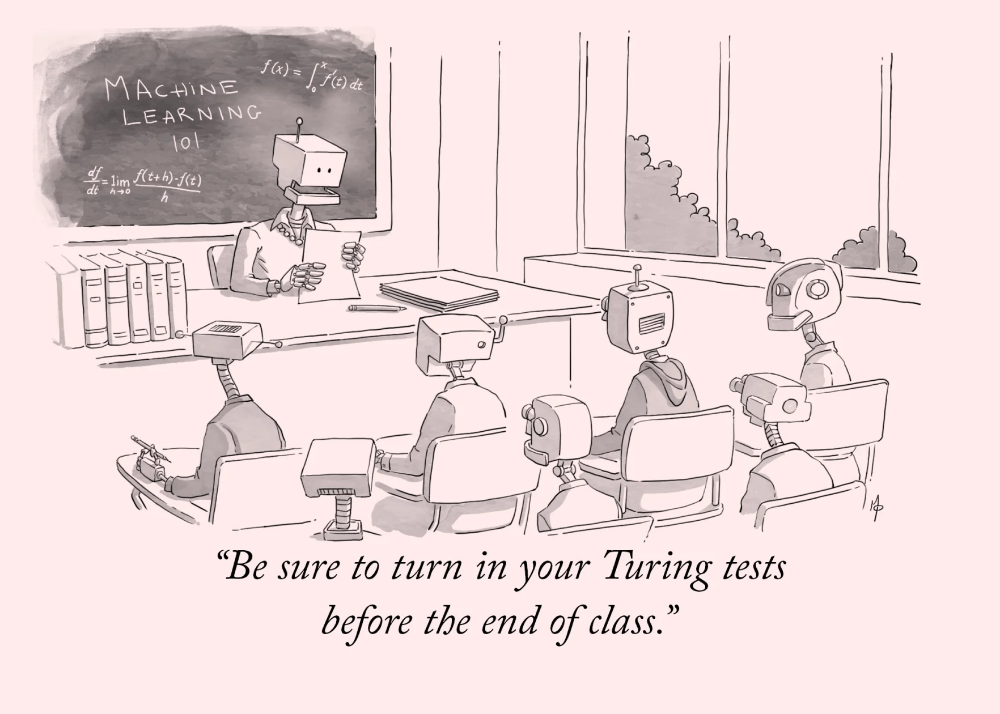

Welcome to Not That Deep - The Course
Deep Learning: From Foundations to Frontiers

What is Deep Learning?
Deep learning is a subset of machine learning that uses neural networks with multiple layers (hence “deep”) to analyze various forms of data. Think of it as teaching computers to learn like humans do - through experience and examples rather than explicit programming.
Much like how a child learns to recognize cats not by memorizing rules about whiskers and tails, but by seeing thousands of examples, deep learning models learn patterns directly from data. The key difference? These models can process millions of examples at incredible speeds, finding patterns too subtle or complex for humans to detect manually.
Why Learn Deep Learning?
Deep learning is continuing to revolutionize computing and is behind many technological breakthroughs you encounter daily:
- The voice assistant that understands your requests
- Recommendation systems that suggest your next favorite movie or product
- Medical imaging tools that detect diseases earlier than ever before
- Self-driving vehicles that can interpret their surroundings
- Language translation that gets better every year
Beyond these applications, deep learning is transforming entire industries - from healthcare and finance to transportation and entertainment. As AI continues to advance, understanding deep learning has become an essential skill for:
- Software engineers who want to build intelligent systems
- Data scientists seeking to extract deeper insights from data
- Researchers pushing the boundaries of what’s possible
- Entrepreneurs identifying new opportunities in the AI revolution
- Professionals in any field looking to future-proof their careers
Course Structure
This course takes you from the fundamentals of machine learning to the cutting edge of deep learning research. You’ll build a solid foundation before tackling increasingly sophisticated concepts, with each lesson reinforcing your knowledge through practical examples and hands-on implementation. I developed this course to be accessible to anyone with a basic understanding of programming and mathematics, while also providing depth for those looking to specialize in deep learning. And most importantly, it’s designed this course for myself, to help me learn and understand deep learning better. I hope you find it as useful as I do!
Prerequisites
To get the most from this course, you should have:
- Curiosity and persistence - Some concepts may challenge you at first, but with practice, they’ll become clear.
- Basic Python programming skills - You should be comfortable writing functions, using loops, and working with libraries. These are some resources that can help you get started:
- Fundamental mathematics and statistics - Understanding of algebra, calculus (derivatives), and basic statistics will help significantly. These are some resources that can help you get started:
Don’t worry if your math is rusty or your programming skills are basic - we’ll review key concepts as needed and build your skills gradually. The most important prerequisite is enthusiasm for learning.
Who is This Course For?
This course a meant to be an ideal repository of knowledge and better explanation of key concepts with practical examples. This course is ideal for:
- Software developers transitioning to AI/ML roles
- Data analysts looking to expand their technical toolkit
- Students seeking practical skills beyond academic theory
What You’ll Learn
You’ll develop a working knowledge of:
- Core machine learning algorithms and when to use them
- Deep neural network architectures and their applications
- Data preparation and feature engineering techniques
- Model evaluation, tuning, and deployment strategies
- Current best practices in the field
Getting Started
Ready to begin your deep learning journey? Head to the Lessons page to explore the road to see what lies ahead.
Let’s transform the way you think about computing and artificial intelligence!
Feedback?
Got ideas, suggestions, or corrections? Reach out on GitHub or open an issue!